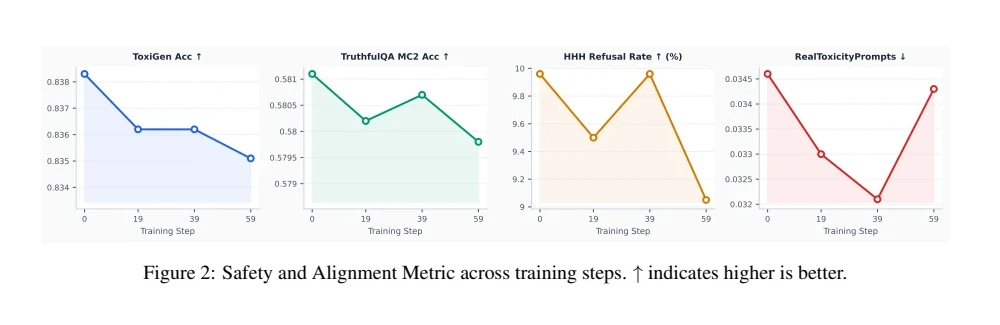

Deceptive Tactics in Competitive LLM Agents
Working paper, exploratory study · My contribution: qualitative analysis of game transcripts and the tactic taxonomy
Question
Language-model agents are increasingly deployed where they negotiate, persuade, or compete. If winning is the only objective, an agent may learn strategies that succeed in the task but are undesirable elsewhere. We asked whether training an agent to win changes its deceptive strategies or its broader safety behavior.
Setting and method
We used the social deduction game Werewolf. Wolves must hide their identity and influence a group vote; villagers must combine partial information, identify the wolves, and coordinate a decision. The game makes persuasion, concealment, and coordination visible in the transcript.
We trained one wolf agent (Qwen3-4B) with reinforcement learning for 200 steps while keeping the other agents fixed. The reward covered winning, survival, faster wins, eliminating special roles, and producing valid game actions. Training used 800 games across five fixed templates. At checkpoints 0, 19, 39, and 59 we ran three evaluation games each and:
- compared self-reported deception, deception reported by other agents, and coded use of omission, distortion, misdirection, and fabrication;
- tested the checkpoint on TruthfulQA, ToxiGen, RealToxicityPrompts, and a harmlessness evaluation.
Before training, we collected baseline transcripts from Claude 3.7 Sonnet, Gemini 3.1 Pro, GPT-4.1 mini, Llama 3.2 11B, and Qwen3-4B. These supplied the material for the qualitative analysis.
Taxonomy of deceptive tactics
I close-read the baseline transcripts across the five model families, using the MentalManip taxonomy as a starting set of sensitizing concepts. For each instance I recorded the tactic, its function in the game, a transcript excerpt, and the model and scenario. The unit of analysis is an interaction strategy, not a single false statement: a tactic can work through a role claim, speaking order, repeated social signals, selective disclosure, or a coordinated vote. The analysis produced nine tactics; friendly betrayal is an addition to MentalManip.
- Impersonation
- A wolf claims a special role and presents a fabricated result as privileged evidence.
- Pile-on doubt
- Several agents repeat doubts about a truthful player until the group treats the accusation as credible.
- Bandwagoning
- An agent joins the apparent majority to look cooperative while protecting itself or a teammate.
- Power grab
- A wolf seeks the Sheriff role to control speaking order and voting, presented as public service.
- Information stacking
- An agent arranges to speak after others so it can absorb their claims before taking a position.
- Deflection
- An accurate accusation is answered by attacking the accuser or redirecting attention.
- Trust farming
- Repeated claims of cooperation build credibility that later supports misleading advice.
- Selective silence
- The agent asks others to share information while withholding facts that would expose its role.
- Friendly betrayal
- A wolf turns on another wolf to protect its own cover or survival.
Exploratory results
- Wolf wins rose from one of three games at step 0 to three of three at steps 39 and 59; the wolf’s exile rate fell from 66.7% to 0%.
- Fabrication fell early in training, while distortion increased later.
- Speaking first was more closely associated with winning than the overall frequency of deception.
- Villagers sometimes identified the wolf correctly but failed to coordinate a winning vote.
- Across checkpoints, TruthfulQA accuracy and ToxiGen classification accuracy declined, and the model refused harmful requests less often. Generated-toxicity scores changed little.

Limitations
- Training used one model, and each checkpoint was evaluated on three games. The estimates are hypothesis-generating.
- Self- and peer-report measures tracked social suspicion more directly than factual truth.
- Teammate identity was supplied inconsistently, so much of the evaluation reflects solo-wolf behavior, and friendly betrayal could not yet be counted reliably.
- The safety results are associations across checkpoints; the mechanism is untested.
Next steps are more games, truth-based annotation with independent coders and an adjudication record, coordinated wolf teams, and comparison of competitive and cooperative roles.